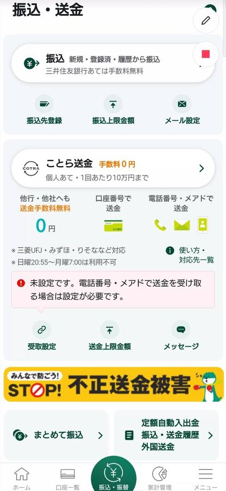

三井住友銀行ネットバンク登録 手順
ネットバンク問い合わせ(ロック時)電話番号
0120-324-310
1.『三井住友銀行アプリ』ダウンロード
2.アプリを開くと下記の画面なるので、次へ→スキップ
3.『ログイン画面へ』
4.SMBC IDになっているので、口座情報をタップ↓
5.『店・口座番号 保存』をタップしてオンにしておく
6.その後、店番号、口座番号、ログイン暗証(ATM使用時に使う暗証番号)を入力し、ログイン
7.電話番号が客が現在使っている電話番号なことを確認して、『自動音声で確認』を押す

8.電話を受けるを押すと、自動音声で電話がかかってくる
9.電話が来ると画面上に表示されているアルファベット２文字読み上げれるので、
電話で本人確認完了後、『次へ』
【注意】基本的には自動音声での本人確認ですが、
６５歳以上(恐らく)だとオペレーターに繋がることもある。
10.本人確認完了後、『ご利用上の注意』となるので１番下までスクロールすると右下の『同意する』
が押せるようになる
11.同意後、右上の中止を押す。
12.その後、また『同意する』をタップ
13.下記の画面で出てくる不要な物は全て✖で消す
14.残高などが表示されている画面まで来たら、右下にある『メニュー』をタップ
15.『ワンタイムパスワード』➡『進む』
16.『ワンタイムパスワードを有効化する』➡『次へ』
17.『同意する』➡マイナンバーor免許証の場合は『本人確認書類』を選択
・両方ない場合は『電話』を選択
・電話の場合は『電話』を選択後ブラウザに移動するので、そこで出てくる番号を固定電話からかけさせる。
・下記はマイナンバーで本人確認です。
【注意】基本的には自動音声での本人確認ですが、
６５歳以上(恐らく)だとオペレーターに繋がることもある。
18.生年月日➡有効期限➡セキュリティコード入力➡次へ
19.『スキャンを開始する』
【注意】
・１０回間違えるとロックされて窓口に行く必要あり。
・マイナンバーはNFCで読み取りしますが、端末によって読み取りできる位置が違います。
・スマホカバーなど付いてる場合は外させる。
・５秒以上動かさずスマホ背面に引っ付けておく必要あり。
20.スキャン完了後、顔写真の撮影『撮影を開始する』
21.撮影後、『次へ』➡『登録実行』
22.『ワンタイムパスワード表示』➡『はい』
23.左上の✖をタップ、これでワンタイム完了
24.振込上限額をあげる。下の緑のボタン『振込・振替』
25.『振込・送金』➡『振込上限額』

26.金額を入力➡『次へ』
【注意】一気に1000万まで上げると100％ロックかかります
27.『変更実行』これで振込までの設定が完了
・振込できるようになるまで３０分～３時間